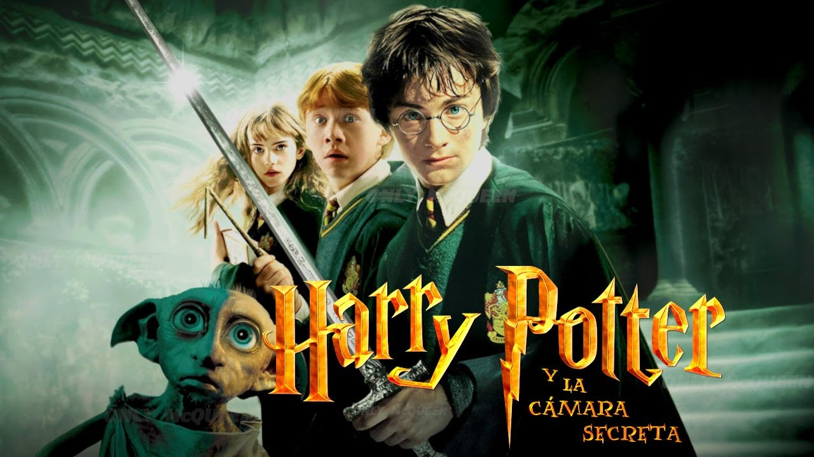

Harry Potter y la Cámara Secreta (2002)
La segunda película de la saga también fue dirigida por Chris Columbus. Durante su segundo año en Hogwarts, una serie de ataques misteriosos comienzan a petrificar a varios estudiantes. Una antigua leyenda habla sobre la Cámara Secreta, un lugar oculto dentro del castillo que guarda un terrible monstruo. Harry deberá descubrir quién abrió la cámara y detener el peligro antes de que sea demasiado tarde.
Datos importantes
- Año de estreno: 2002
- Director: Chris Columbus
- Duración: 161 minutos
- Elemento principal: el basilisco y el diario de Tom Riddle
